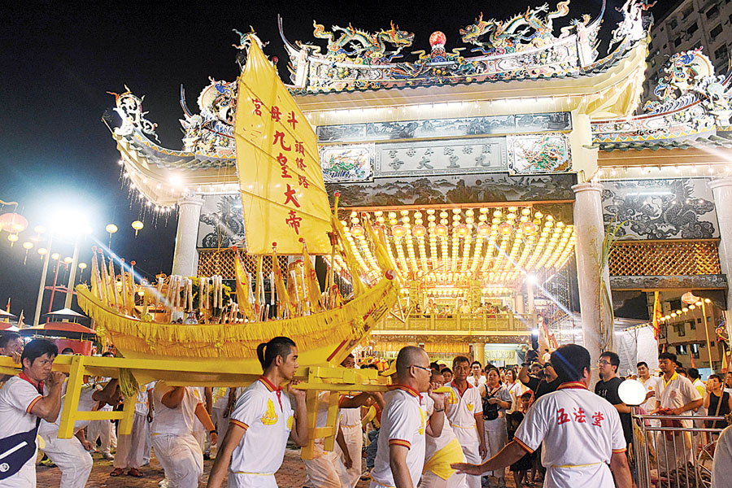

槟城庙会

作为每年春节的重头活动之一，今年的庙会势必也将把槟城过年的气氛推到最高点！今年的主题是：“赴一场故事飨宴”，活动范围涵盖古迹区12条街道、23家宗祠会馆、14个舞台或表演区，以及超过100家古迹区以外的宗祠、会馆和文化单位参与其中，让各族及外国游客齐齐欢腾在这浓厚的年味及文化气息当中！
Anime Matsuri

九皇爺慶典

在马来西亚九皇大帝诞辰是非常盛大的道教庆典，尤其在马来西亚北部的华人更是会大肆庆祝。在九皇大帝诞辰期间茹素九日也在马来西亚华人社群里形成了一种风气，不管男女老少大都会在选择在这九天茹素。 每当九皇大帝诞辰来临时在庙宇旁的道路两侧都会立起很多书着“九皇大帝”的黄旗，在庙宇附近，或社区旁都会林立非常多的临时摊贩售卖素食，售卖素食的摊贩或店家们都会在自家摊位前挂上书写着“九皇斋”或“九皇大帝”的黄布条以示所售卖的食物都是符合九皇斋的素食，也因为茹素风气盛行，有些荤食店家也都会在这九天选择休息不营业。 一般上九皇大帝诞辰都会在斗母宫进行，信徒们多是穿素色衣服或全白的衣服到庙里祭拜。从农历九月初一前一晚的迎銮开始，直到九月初九晚的恭送皇船回銮连续九天每天都会进行不同的祭祀或祈福活动，一般上也会有神轿游行巡境等。。
槟城热气球嘉年华

一年一度的槟城热气球嘉年华是全城最火的活动之一，向来以人潮闻名！一连两天共有15个来自世界各地、造型各异的热气球与观众见面，更供观众体验乘坐热气球，不用飞到土耳其囖！现场也设有饮食摊位和娱乐区域活动，非常适合一家大小来参与。